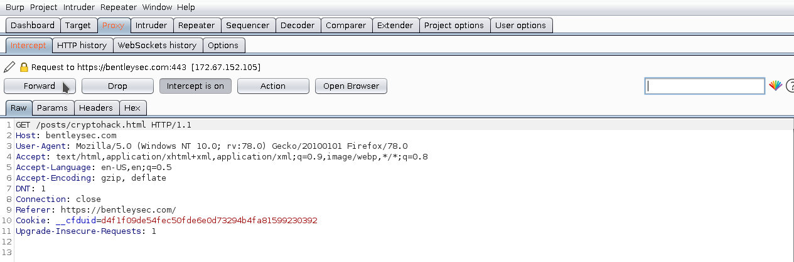

Burp Suite is an integrated platform for performing security testing of web applications. Its various tools work seamlessly together to support the entire testing process, from initial mapping and analysis of an application’s attack surface, through to finding and exploiting security vulnerabilities.
Burp gives you full control, letting you combine advanced manual techniques with state-of-the-art automation, to make your work faster, more effective, and more fun.
